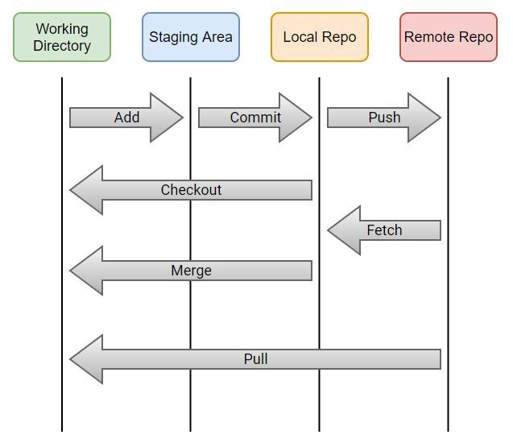

- Untracked directory : Elke map in je filesystem
- Working directory : een map die opgevolgd wordt door GIT (tracked)
git init - Staging area : files die moeten opgevolgd worden voeg je toe aan de staging area
git add * - Local repository : een lokale "foto" van je files in de huidige toestand
git commit -m "commit bericht" - Remote repository : een "foto" van je files op een andere locatie (bv : Gitbub)
git push
- Commit : In sourcecontrol staan de wijzigingen opgelijst. Wijzigingen worden automatisch toegevoegd aan de lijst van files die opgenomen zijn in de commit. Vergeet de message die bij deze commit hoort niet in te vullen.
- Sync Changes :
 Nadat je een commit gedaan hebt (en er dus lokaal geen wijzigingen staan te wachten) zal
VSCode je een "Sync Changes"-knop tonen. Via deze weg zullen de wijzigingen van de lokale
repository naar de remote repository geduwd worden én zullen de wijzigingen van de remote
repository ingeladen worden.
Nadat je een commit gedaan hebt (en er dus lokaal geen wijzigingen staan te wachten) zal
VSCode je een "Sync Changes"-knop tonen. Via deze weg zullen de wijzigingen van de lokale
repository naar de remote repository geduwd worden én zullen de wijzigingen van de remote
repository ingeladen worden.
- Pull : 22
- Geef de web URL in en druk op enter
- Kies een folder om de repository in te bewaren
- Open de command palette
- via menu "View"->"Command Palette"
- de sneltoets van het command palette Ctrl+Shift+P
- via F1
- typ "git"
- alle git commando's worden getoond
- kies voor "Git: Clone"
- Geef de web URL in en druk op enter
- Kies een folder om de repository in te bewaren
- Open een terminal via menu "Terminal"->"New terminal"
- Open de correcte map (bijvoorbeeld)
cd "C:\xampp\htdocs\demoGIT" - Clone de repository
git clone https://github.com/jdetaver/demoGITYYYMM.git